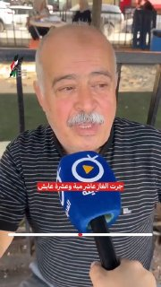
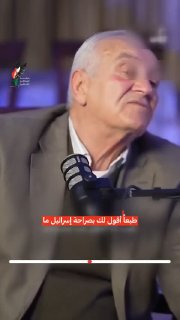
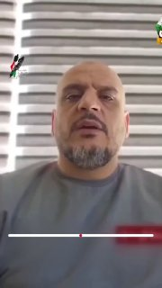
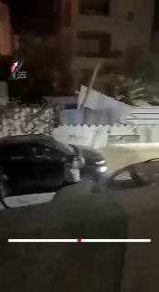
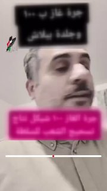
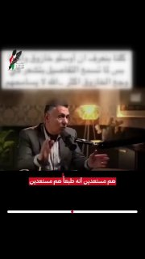
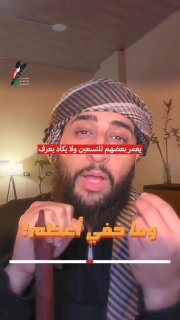
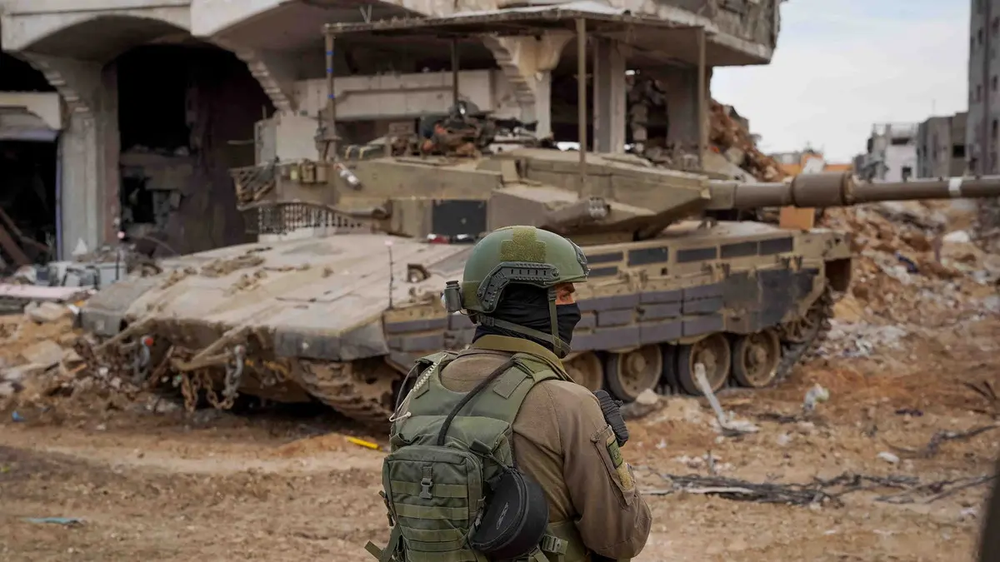

معالجات اخبارية
3 مليارات شيقل ديون على السلطة.. ماذا جرى في ملف المحروقات؟
تتجه السلطة إلى تأسيس شركة جديدة تابعة لـ”ياسر عباس”، تتولى شراء المحروقات وتخزينها، على أن يقتصر دور هيئة البترول على الإشراف..

الحقيقة بلا حواجز
تتجه السلطة إلى تأسيس شركة جديدة تابعة لـ”ياسر عباس”، تتولى شراء المحروقات وتخزينها، على أن يقتصر دور هيئة البترول على الإشراف..
يتحدّث تلقائيًا من تيليجرام وفيسبوك

تيليجرامالمدة 1:35
تيليجرامالمدة 2:30
تيليجرامالمدة 1:43
تيليجرامالمدة 0:17
تيليجرامالمدة 3:19
تيليجرامالمدة 2:51
تيليجرامالمدة 0:40100
ألف شيقل
كشفت صحيفة هآرتس العبرية، نقلًا عن تحقيق للجيش الإسرائيلي، أن الجاسوس عبد العزيز الدهيني، شقيق مسؤول المليشيات المتعاونة..
توالت بيانات ومواقف فلسطينية رافضة للحملة الإعلامية التي استهدفت الأمين العام لـالمبادرة الوطنية الفلسطينية مصطفى البرغوثي..
أعلن مدير عام المكتب الإعلامي الحكومي إسماعيل الثوابتة أنه "في خطوة تعكس المسؤولية الوطنية، واستكمالًا لإجراءات نقل إدارة الحكم في قطاع غزة،..
